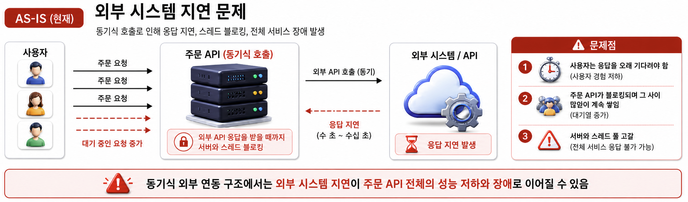
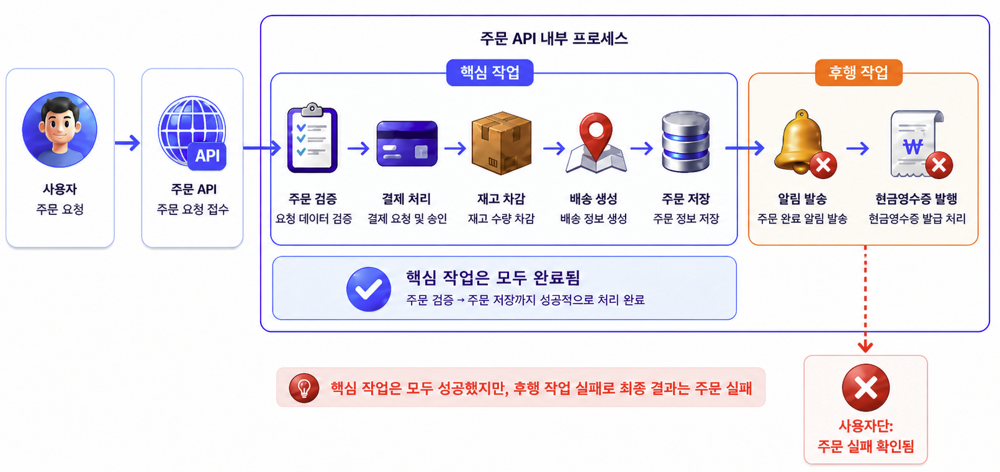

Why?
초기에는 주문과 관련된 모든 처리를 동기식으로 구현했는데, 실제 운영을 하다 보니 몇 가지 한계가 명확히 드러났습니다.
① 외부 시스템 지연 — 동기식으로 외부 API를 호출하는데 응답이 1분 이상 걸리는 경우가 있어 사용자가 그동안 기다려야 했고, 주문 API가 그 시간 동안 블로킹되며 들어오는 요청들이 쌓여 서블릿 스레드 풀이 고갈되어 전체 서비스가 응답하지 못할 수 있었습니다.
AS-IS · 외부 시스템 지연 문제

② 후행 작업의 장애 전파 — 결제 완료 후 현금영수증 API 호출까지 하나의 주문 프로세스로 묶여 있었습니다. 발급이 실패하면 주문 자체가 롤백되는, 비즈니스 중요도에 비해 과도한 결합 구조였습니다. try-catch로 잡아도 OOM 같은 장애에는 같은 서버이기 때문에 동반 다운에 취약합니다.
AS-IS · 후행 작업의 장애 전파
